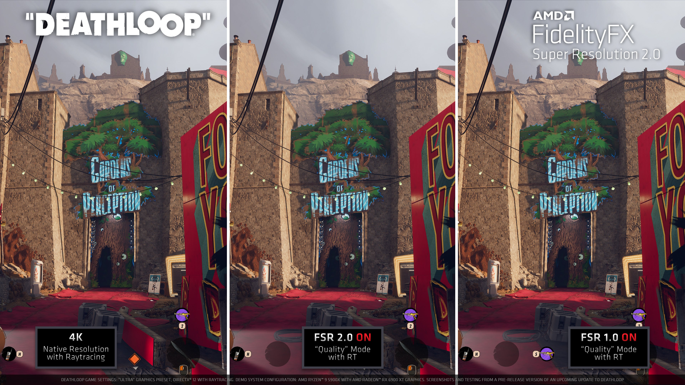
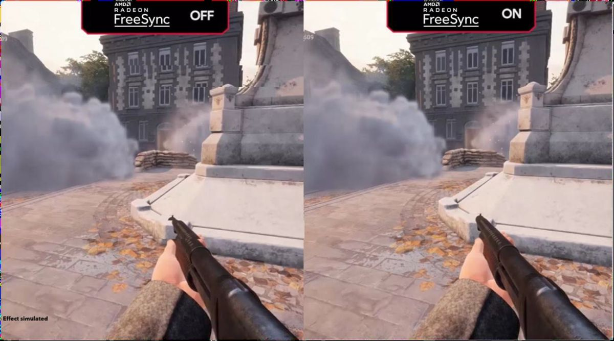

Features

Ray tracing is a technique used in computer graphics to generate realistic images of 3D scenes. It works by simulating the behavior of light in a virtual environment, tracing the path of light rays as they bounce off objects and interact with the camera and other elements in the scene.In a ray tracing algorithm, a virtual camera is placed in the scene and a ray is cast from the camera through each pixel of the image. This ray is then traced as it bounces off objects in the scene, with the color and intensity of the ray's interaction with each object calculated based on the properties of the object's material and the direction and intensity of the light source(s) in the scene. These calculations are repeated for each ray, with the final image being generated by combining the color and intensity of each ray that intersects the camera's view frustum.

FidelityFX Super Resolution (FSR) is an upscaling technology developed by AMD. It is designed to enhance the performance of video games by increasing the resolution of the image without significantly reducing performance or increasing power consumption.FSR works by taking a lower-resolution image and using advanced algorithms to upscale it to a higher resolution. This allows games to be played at higher resolutions than what the hardware is natively capable of, while still maintaining smooth frame rates and reducing the burden on the graphics card.One of the key features of FSR is its compatibility with a wide range of hardware, including both AMD and NVIDIA graphics cards. It is also designed to work across multiple platforms, including PC, consoles, and mobile devices.

DirectX 12 is a low-level graphics API (application programming interface) developed by Microsoft for Windows-based computers and game consoles. It provides developers with access to the hardware resources of the system, allowing for more efficient and effective use of the graphics processing unit (GPU).DirectX 12 offers a number of benefits over previous versions of DirectX, including improved performance, reduced CPU overhead, and support for new hardware features such as asynchronous compute and multi-GPU rendering. It also allows for more fine-grained control over the graphics pipeline, enabling developers to optimize their code for specific hardware configurations and achieve greater visual fidelity in their games and applications.

AMD FreeSync is a technology developed by AMD to improve the gaming experience by synchronizing the refresh rate of a compatible display with the output of a graphics card.
Traditionally, displays operate at a fixed refresh rate, typically 60Hz, regardless of the output from the graphics card. This can lead to visual artifacts such as screen tearing and stuttering when the graphics card's output does not match the display's refresh rate.
AMD FreeSync solves this problem by allowing the display's refresh rate to dynamically adjust to match the output of the graphics card. This results in smoother and more fluid gameplay, with reduced input lag and fewer visual artifacts.